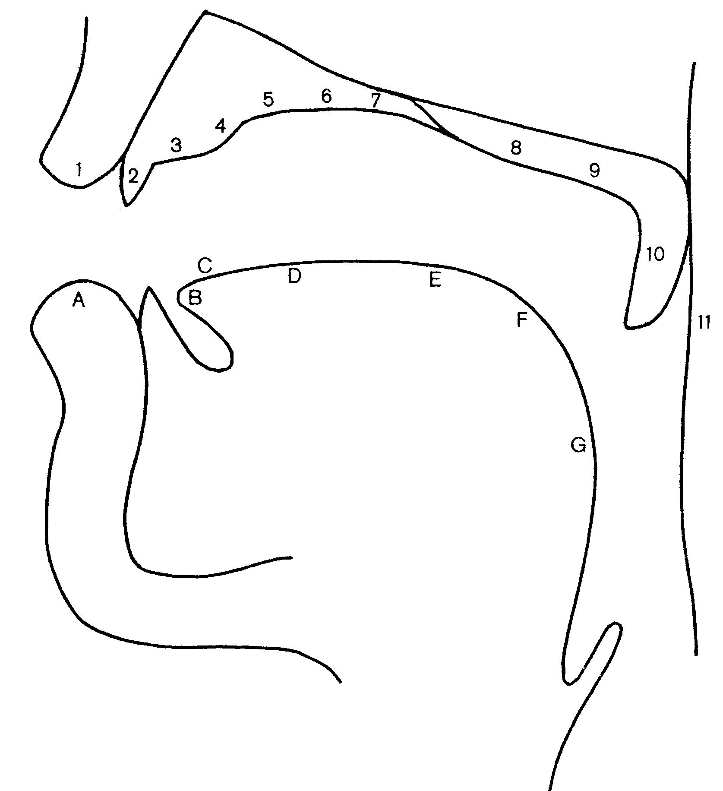

La langue est un muscle très mobile, qui peut prendre de nombreuses positions dans la bouche et aussi sur elle-même (creusée vers le milieu, retournée vers l’arrière). La langue comprend du point de vue de la phonétique articulatoire plusieurs parties, notamment la pointe ou apex , la couronne et le dos . On distingue dans le dos de la langue une partie antérieure , une partie médiane et une partie postérieure . Ceci correspond aux zones prédorsale , médiodorsale et postdorsale .
Les lèvres jouent un rôle très important. Elles peuvent former des sons seules, quand on met les deux lèvres en contact comme pour [p], ou bien avec un contact des dents comme pour [f]. Quand les lèvres sont fermées, on obtient des consonnes bilabiales .
En outre, les lèvres peuvent aussi prendre une forme particulière : il existe des voyelles arrondies , lors de la prononciation desquelles les lèvres forment une espèce de rond (comme pour [u]), on parle alors de voyelles labialisées . Ou bien on peut étirer les lèvres pour ouvrir la bouche en largeur (comme pour le [a] français, parisien notamment), on obtient alors des voyelles écartées ou illabiales .
En français, on observe aussi que, pendant la production de certains phonèmes, les lèvres vont beaucoup plus vers l’avant qu’en finnois. Un [u] français comme dans toujours se prononce avec une plus grande projection des lèvres que par exemple en finnois.
|  |
|